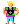
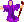
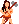
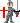

A Project Darkstar Game
Project Overview: The Hack project is an multiplayer, 2D, rogue-like RPG built using the Project Darkstar MMO application server stack. The project also serves as a well-documented, example for how to build MMO-like games using Project Darkstar technology. The Hack code is released into the Creative Commons Public Domain and is available for unrestricted use.
Get involved with the project today:
|
 Read the design documentation and our FAQ Like any growing project, we have done our best to provide documentation on how to get started and how the project is structured. New developers and those wanting to start programming MMOs are encourage to start with these pages to get a feel for how the game is structured. Hack was initially built as a protype game as a part of Project Darkstar and was used as a learning example and for performance testing. Now that PDS has been open sourced, Hack is being developed as a fully-featured game and is simultaneously used to serve as an programming example for new developers wanting to learn how to develop games using PDS. |
|
|
 Browse the source code or check out your own copy Hack is a open source game and you can freely browse the Subversion repository that contains all of the source code for the hack project. Hack has been released with the Creative Commons liscence, so developers can reuse any features they add to Hack without liscencing restrictions later when they start developing their own games later! |
|
|
 Choose any of the open projects to work on We use Issuezilla to track all the ideas, projects and issues for the entire code base. You can view a complete list here . If you are looking for a good place to get started, this is it! Many of the projects come with detailed implementation plans, and people are welcome to suggest their own as well. |
|
|
 Subscribe to our mailing lists and discuss your ideas We have active mailing lists for several topics. For development and general discussions, we use the dev@ mailing list. Anyone interested in contributing, or even just asking questions is encouraged to join this mailing list. We also use subversion commit notifications and issue tracker issue change notifications are sent to separate mailing lists for the hack project. For broader Project Darkstar game development topics, we also use the parent games-darkstar dev and announce lists. |

Hack is a proud member of the Project Darkstar Game Community